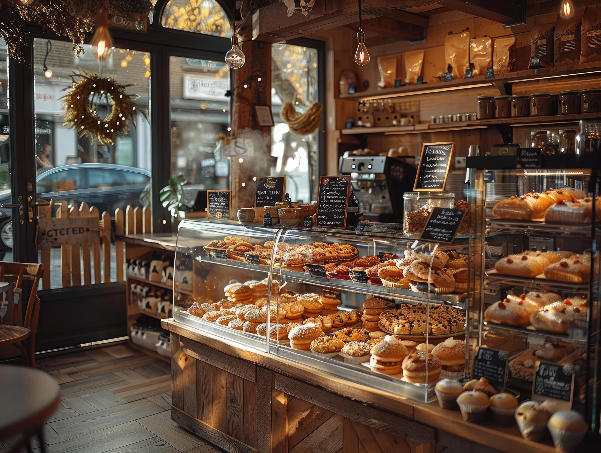

Bella’s Baked Goods is a small, locally owned bakery dedicated to crafting fresh breads, pastries, sweets, and specialty coffee with care and quality ingredients. Everything we make is baked with attention to detail and a passion for homemade flavor. Our goal is to share delicious food while creating a warm, cozy space where the community can gather, connect, and feel at home. Whether you’re stopping in for your morning coffee or a sweet treat, we’re here to make every visit special.
